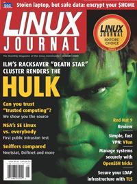

Shutdown Archive web server
Search:
Linux Journal
Issue #112/August 2003

Features
Implementing Encrypted Home Directories
by Mike Petullo
Keep your files safely encrypted when you're logged out, and automatically get access when you log in.
Take Control of TCPA
by David Safford, Jeff Kravitz and Leendert van Doorn
The free code behind IBM's new security chip. Menace or protector?
The Power of the Incredible Hulk—The ILM Linux Death Star
by Robin Rowe
This fully operational battle station is a 750-node Linux cluster running a custom batch scheduling program.
Root for All on the SE Linux Play Machine
by Russell Coker
Set visitors loose as root and see what they break—can SE Linux alone keep the system safe?
Indepth
Eleven SSH Tricks
by Daniel R. Allen
You know it's the secure way to connect to your server. But OpenSSH is fast and convenient too.
VTun
by Ryan Breen
Need to make a secure connection from home? Set up a simple virtual private network?
2003 Editors' Choice Awards
With all the great Linux stuff introduced in the past year, these are some of the hardest decisions we've ever made.
Embedded
Driving Me Nuts Device Classes
by Greg Kroah-Hartman
Toolbox
Kernel Korner
NSA Security Enhanced Linux
by Faye Coker
At the Forge
CMF Types
by Reuven M. Lerner
Cooking with Linux
Illuminating Your Network's Darkest Corners
by Marcel Gagné
Paranoid Penguin
Authenticate with LDAP
by Mick Bauer
Columns
Linux for Suits
Practical Penguin Progress
by Doc Searls
EOF
Consider Accessibility
by Janina Sajka
Reviews
Red Hat 9
by Marco Fioretti
Departments
Letters
upFRONT
From the Editor
: Security: Yes, It's Part of Your Job
On the Web
Best of Technical Support
New Products
Archive Index
Shutdown Archive web server
Search:
Copyright © 1994 - 2018
Linux Journal
. All rights reserved.